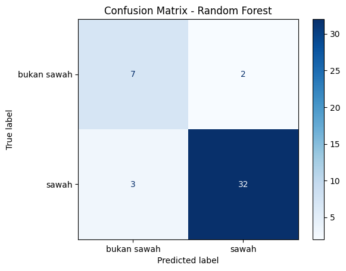
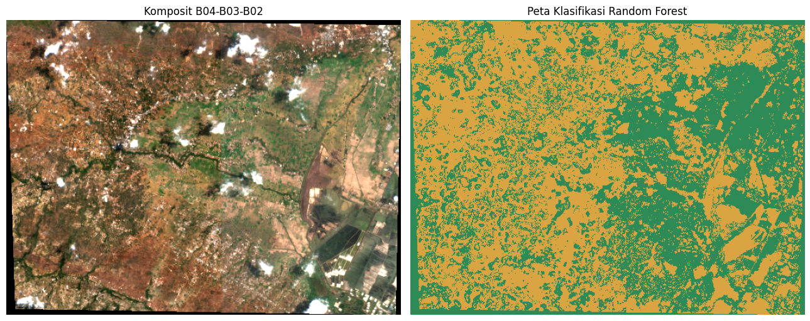

Klasifikasi Sawah dan Bukan Sawah dengan Random Forest#
Notebook ini mengikuti alur utama 01. Machine_Learning.ipynb dari scikit-eo: membaca citra, menyiapkan sampel berlabel, melatih Random Forest, mengevaluasi hasil, membuat peta klasifikasi, dan menyimpan raster hasil. Data citra Sentinel-2 (band B01–B04) dan poligon GeoJSON yang digunakan mengambil lokasi di Lenteng, Kabupaten Sumenep.
1. Instalasi dan import library#
Jalankan instalasi bila library belum tersedia. Disarankan memakai Google Colab atau environment Python dengan GDAL/rasterio yang sudah terpasang.
!pip install rasterio geopandas shapely scikit-learn matplotlib pandas
Requirement already satisfied: rasterio in /usr/local/lib/python3.13/dist-packages (1.5.1)
Requirement already satisfied: geopandas in /usr/local/lib/python3.13/dist-packages (1.1.4)
Requirement already satisfied: shapely in /usr/local/lib/python3.13/dist-packages (2.1.2)
Requirement already satisfied: scikit-learn in /usr/local/lib/python3.13/dist-packages (1.6.1)
Requirement already satisfied: matplotlib in /usr/local/lib/python3.13/dist-packages (3.10.0)
Requirement already satisfied: pandas in /usr/local/lib/python3.13/dist-packages (2.2.3)
Requirement already satisfied: affine in /usr/local/lib/python3.13/dist-packages (from rasterio) (3.0.1)
Requirement already satisfied: attrs in /usr/local/lib/python3.13/dist-packages (from rasterio) (26.1.0)
Requirement already satisfied: certifi in /usr/local/lib/python3.13/dist-packages (from rasterio) (2026.7.22)
Requirement already satisfied: click!=8.2.*,>=4.0 in /usr/local/lib/python3.13/dist-packages (from rasterio) (8.5.0)
Requirement already satisfied: numpy>=2 in /usr/local/lib/python3.13/dist-packages (from rasterio) (2.1.3)
Requirement already satisfied: pyparsing>=3.0 in /usr/local/lib/python3.13/dist-packages (from rasterio) (3.3.2)
Requirement already satisfied: pyogrio>=0.7.2 in /usr/local/lib/python3.13/dist-packages (from geopandas) (0.13.0)
Requirement already satisfied: packaging in /usr/local/lib/python3.13/dist-packages (from geopandas) (26.3)
Requirement already satisfied: pyproj>=3.5.0 in /usr/local/lib/python3.13/dist-packages (from geopandas) (3.8.0)
Requirement already satisfied: scipy>=1.6.0 in /usr/local/lib/python3.13/dist-packages (from scikit-learn) (1.16.3)
Requirement already satisfied: joblib>=1.2.0 in /usr/local/lib/python3.13/dist-packages (from scikit-learn) (1.6.0)
Requirement already satisfied: threadpoolctl>=3.1.0 in /usr/local/lib/python3.13/dist-packages (from scikit-learn) (3.7.0)
Requirement already satisfied: contourpy>=1.0.1 in /usr/local/lib/python3.13/dist-packages (from matplotlib) (1.4.0)
Requirement already satisfied: cycler>=0.10 in /usr/local/lib/python3.13/dist-packages (from matplotlib) (0.12.1)
Requirement already satisfied: fonttools>=4.22.0 in /usr/local/lib/python3.13/dist-packages (from matplotlib) (4.65.0)
Requirement already satisfied: kiwisolver>=1.3.1 in /usr/local/lib/python3.13/dist-packages (from matplotlib) (1.5.1)
Requirement already satisfied: pillow>=8 in /usr/local/lib/python3.13/dist-packages (from matplotlib) (11.3.0)
Requirement already satisfied: python-dateutil>=2.7 in /usr/local/lib/python3.13/dist-packages (from matplotlib) (2.9.0.post0)
Requirement already satisfied: pytz>=2020.1 in /usr/local/lib/python3.13/dist-packages (from pandas) (2025.2)
Requirement already satisfied: tzdata>=2022.7 in /usr/local/lib/python3.13/dist-packages (from pandas) (2026.4)
Requirement already satisfied: cloudpickle>=3.0 in /usr/local/lib/python3.13/dist-packages (from joblib>=1.2.0->scikit-learn) (3.1.2)
Requirement already satisfied: six>=1.5 in /usr/local/lib/python3.13/dist-packages (from python-dateutil>=2.7->matplotlib) (1.17.0)
import os, zipfile, json
import numpy as np
import pandas as pd
import rasterio
from rasterio.features import geometry_mask
from shapely.geometry import shape, mapping
from shapely import make_valid
from sklearn.ensemble import RandomForestClassifier
from sklearn.model_selection import train_test_split
from sklearn.metrics import confusion_matrix, accuracy_score, classification_report, cohen_kappa_score, ConfusionMatrixDisplay
import matplotlib.pyplot as plt
2. Membaca data#
Unggah lenteng.zip dan data mentah.geojson ke folder kerja notebook, atau ubah variabel path sesuai lokasi file.
from google.colab import files
import zipfile
import os
uploaded = files.upload()
zip_path = "lenteng.zip"
data_dir = "lenteng_data"
os.makedirs(data_dir, exist_ok=True)
with zipfile.ZipFile(zip_path, "r") as z:
z.extractall(data_dir)
files = os.listdir(data_dir)
print("File berhasil diekstrak:")
for file in files:
print(file)
Saving lenteng.zip to lenteng.zip
File berhasil diekstrak:
2026-10-01-00_00_2026-10-01-23_59_Sentinel-2_L2A_B01_(Raw).tiff
2026-10-01-00_00_2026-10-01-23_59_Sentinel-2_L2A_B02_(Raw).tiff
2026-10-01-00_00_2026-10-01-23_59_Sentinel-2_L2A_True_color.tiff
2026-10-01-00_00_2026-10-01-23_59_Sentinel-2_L2A_B03_(Raw).tiff
2026-10-01-00_00_2026-10-01-23_59_Sentinel-2_L2A_B04_(Raw).tiff
band_files = {}
for band in ["B01", "B02", "B03", "B04"]:
matches = [os.path.join(data_dir, f) for f in files if band in f and f.lower().endswith((".tif", ".tiff"))]
if not matches: raise FileNotFoundError(f"Raster untuk {band} tidak ditemukan")
band_files[band] = matches[0]
with rasterio.open(band_files["B01"]) as src:
profile = src.profile.copy()
transform = src.transform
crs = src.crs
height, width = src.height, src.width
bounds = src.bounds
arrays = []
for band in ["B01", "B02", "B03", "B04"]:
with rasterio.open(band_files[band]) as src:
if (src.width, src.height, src.transform, src.crs) != (width, height, transform, crs):
raise ValueError(f"Raster {band} tidak sejajar dengan B01")
arrays.append(src.read(1).astype("float32"))
image = np.stack(arrays, axis=-1)
print("Ukuran citra (baris, kolom, band):", image.shape)
print("CRS:", crs, "Bounds:", bounds)
Ukuran citra (baris, kolom, band): (424, 565, 4)
CRS: EPSG:4326 Bounds: BoundingBox(left=113.746777, bottom=-7.080962, right=113.8484, top=-7.005149)
import json
import pandas as pd
from google.colab import files
from shapely.geometry import shape
from shapely.validation import make_valid
uploaded = files.upload()
geojson_path = next(iter(uploaded))
print("File GeoJSON yang digunakan:", geojson_path)
with open(geojson_path, "r", encoding="utf-8") as f:
geojson = json.load(f)
features = []
for feat in geojson.get("features", []):
geom_data = feat.get("geometry")
props = feat.get("properties", {}) or {}
label = props.get("type")
if not geom_data or label not in ["sawah", "bukan sawah"]:
continue
try:
geom = shape(geom_data)
if not geom.is_valid:
geom = make_valid(geom)
if geom.is_empty or not geom.is_valid:
continue
if geom.geom_type in ["Polygon", "MultiPolygon"]:
features.append({
"geometry": geom,
"label": label
})
except Exception as e:
print("Geometri dilewati:", e)
print("Jumlah poligon yang dapat digunakan:", len(features))
print("\nJumlah masing-masing kelas:")
print(
pd.Series(
[x["label"] for x in features]
).value_counts()
)
Saving sawah.geojson to sawah.geojson
File GeoJSON yang digunakan: sawah.geojson
Jumlah poligon yang dapat digunakan: 100
Jumlah masing-masing kelas:
sawah 50
bukan sawah 50
Name: count, dtype: int64
3. Ekstraksi nilai spektral untuk training#
Setiap poligon digunakan untuk mengambil piksel di dalam area sampel. Semua piksel di dalam poligon mewarisi label type poligon tersebut.
X_list, y_list = [], []
for item in features:
geom = item["geometry"]
try:
inside = geometry_mask([mapping(geom)], out_shape=(height, width), transform=transform, invert=True, all_touched=False)
valid = inside & np.all(np.isfinite(image), axis=-1)
pixels = image[valid]
if pixels.size:
X_list.append(pixels)
y_list.extend([item["label"]] * len(pixels))
except Exception as e:
print("Poligon dilewati saat ekstraksi:", e)
if not X_list:
raise ValueError("Tidak ada piksel sampel yang berhasil diekstrak. Periksa CRS dan lokasi GeoJSON terhadap raster.")
X = np.vstack(X_list)
y = np.asarray(y_list)
print("Jumlah sampel piksel:", len(y))
print(pd.Series(y).value_counts())
print("Fitur yang digunakan: B01, B02, B03, B04")
Jumlah sampel piksel: 218
sawah 171
bukan sawah 47
Name: count, dtype: int64
Fitur yang digunakan: B01, B02, B03, B04
4. Membagi data dan melatih Random Forest#
Pembagian data menggunakan 80% training dan 20% testing, mengikuti parameter pada contoh GitHub. Karena piksel dari poligon yang sama dapat saling mirip, hasil evaluasi ini perlu dibaca sebagai evaluasi berbasis piksel, bukan validasi spasial independen.
X_train, X_test, y_train, y_test = train_test_split(
X, y, test_size=0.2, random_state=42, stratify=y
)
rf = RandomForestClassifier(n_estimators=200, random_state=42, class_weight="balanced", n_jobs=-1)
rf.fit(X_train, y_train)
y_pred = rf.predict(X_test)
print("Training:", len(y_train), "Testing:", len(y_test))
Training: 174 Testing: 44
5. Evaluasi hasil#
Notebook referensi menampilkan overall accuracy, kappa index, dan confusion matrix. Di sini juga ditampilkan precision, recall, dan F1-score.
accuracy = accuracy_score(y_test, y_pred)
kappa = cohen_kappa_score(y_test, y_pred)
labels = ["bukan sawah", "sawah"]
cm = confusion_matrix(y_test, y_pred, labels=labels)
print("Overall accuracy:", round(accuracy, 4))
print("Kappa index:", round(kappa, 4))
print("\nClassification report:")
print(classification_report(y_test, y_pred, labels=labels, zero_division=0))
cm_df = pd.DataFrame(cm, index=labels, columns=labels)
display(cm_df)
cm_df.to_csv("confusion_matrix.csv", sep=";", index=True)
ConfusionMatrixDisplay(confusion_matrix=cm, display_labels=labels).plot(cmap="Blues", values_format="d")
plt.title("Confusion Matrix - Random Forest")
plt.show()
Overall accuracy: 0.8864
Kappa index: 0.6646
Classification report:
precision recall f1-score support
bukan sawah 0.70 0.78 0.74 9
sawah 0.94 0.91 0.93 35
accuracy 0.89 44
macro avg 0.82 0.85 0.83 44
weighted avg 0.89 0.89 0.89 44
| bukan sawah | sawah | |
|---|---|---|
| bukan sawah | 7 | 2 |
| sawah | 3 | 32 |

8. Membuat peta klasifikasi seluruh citra#
Prediksi dilakukan untuk semua piksel yang memiliki nilai valid. Kode kelas disimpan sebagai 1 = bukan sawah dan 2 = sawah.
class_map = np.zeros((height, width), dtype=np.uint8)
valid_pixels = np.all(np.isfinite(image), axis=-1)
if valid_pixels.any():
predicted_all = rf.predict(image[valid_pixels])
class_map[valid_pixels] = np.where(predicted_all == "sawah", 2, 1).astype(np.uint8)
fig, axes = plt.subplots(1, 2, figsize=(13, 6))
# Tampilkan komposit warna semu dari B04, B03, B02
rgb = np.stack([image[:, :, 3], image[:, :, 2], image[:, :, 1]], axis=-1)
lo, hi = np.nanpercentile(rgb, [2, 98])
rgb_show = np.clip((rgb - lo) / (hi - lo + 1e-9), 0, 1)
axes[0].imshow(rgb_show)
axes[0].set_title("Komposit B04-B03-B02")
axes[0].axis("off")
axes[1].imshow(np.ma.masked_equal(class_map, 0), cmap=plt.matplotlib.colors.ListedColormap(["#d9a441", "#2e8b57"]), vmin=1, vmax=2)
axes[1].set_title("Peta Klasifikasi Random Forest")
axes[1].axis("off")
plt.tight_layout()
plt.show()
print()
print("kuning = bukan sawah")
print("hijau = sawah")

kuning = bukan sawah
hijau = sawah
7. Menyimpan peta klasifikasi ke GeoTIFF#
Nilai 0 berarti piksel tidak valid/tidak diprediksi, 1 berarti bukan sawah, dan 2 berarti sawah.
out_profile = profile.copy()
# Hapus ukuran block dari profile lama
out_profile.pop("blockxsize", None)
out_profile.pop("blockysize", None)
out_profile.update(
driver="GTiff",
count=1,
dtype="uint8",
nodata=0,
compress="lzw",
tiled=True,
blockxsize=256,
blockysize=256
)
out_path = "klasifikasi_sawah_lenteng.tif"
with rasterio.open(out_path, "w", **out_profile) as dst:
dst.write(class_map, 1)
print("Raster hasil disimpan:", out_path)
Raster hasil disimpan: klasifikasi_sawah_lenteng.tif
8. Catatan interpretasi#
Hasil klasifikasi bergantung pada kualitas dan ketepatan poligon label di GeoJSON.
Jika label pada GeoJSON memiliki ejaan berbeda, sesuaikan daftar kelas pada bagian preprocessing.
Untuk evaluasi yang lebih kuat, gunakan pemisahan training/testing berdasarkan poligon, bukan pembagian acak piksel, agar piksel dari poligon yang sama tidak tersebar ke kedua kelompok.